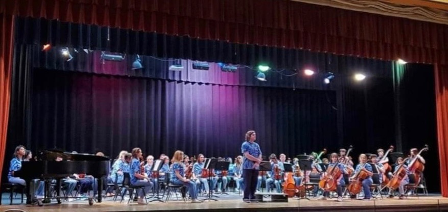

High School
Western Branch High School
Learn about the WBHS orchestra program, ensembles, performances, and opportunities for student musicians.
Explore WBHS OrchestraWestern Branch High School • Jolliff Middle School
The Western Branch Orchestras Parents Association supports student musicians through performances, activities, fundraising, and opportunities that help students grow through music.

Upcoming Required Performance | Jolliff Middle School
Thursday, December 10, 2026
7:30 PM
Jolliff Middle School Auditorium
Student report times: 6th grade by 7:10 PM (Orchestra Room); 7th grade by 6:40 PM (Chorus Room); 8th grade by 6:50 PM (Band Room).
Students should not arrive before 6:30 PM unless accompanying a parent volunteering for Mrs. Rose. Formal performance attire and attendance requirements apply.
Start Here
Find the information families use most.
Western Branch Orchestras Parents Association
Every student deserves the opportunity to grow through music. Your support helps WBOPA provide resources and experiences that enrich the orchestra programs at Western Branch High School and Jolliff Middle School.
Donations help support instruments, sheet music, performances, educational experiences, student activities, and other program needs.
Choose a $10, $25, $50, or $100 donation. The checkout total is shown before payment.
Choose a Donation AmountChoose your donation amount on our fundraising page, then complete checkout securely through Square.
Donation options: westernbranchorchestra.org/fundraising.html
Scan to Choose a Donation
Next on the Calendar
The next four upcoming events are automatically pulled from the orchestra calendar.
Our Programs
Supporting orchestra education throughout the Western Branch community.
High School
Learn about the WBHS orchestra program, ensembles, performances, and opportunities for student musicians.
Explore WBHS OrchestraMiddle School
Learn about the Jolliff orchestra program, performances, and opportunities for developing student musicians.
Explore Jolliff OrchestraWestern Branch Orchestras Parents Association
WBOPA works alongside orchestra directors, students, and families to support performances, educational opportunities, trips, activities, equipment, fundraising, and other needs that strengthen the orchestra experience at Western Branch High School and Jolliff Middle School.